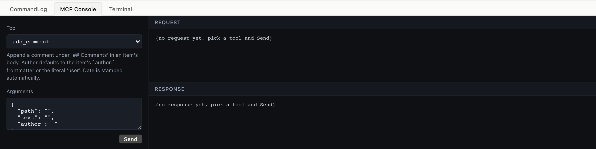
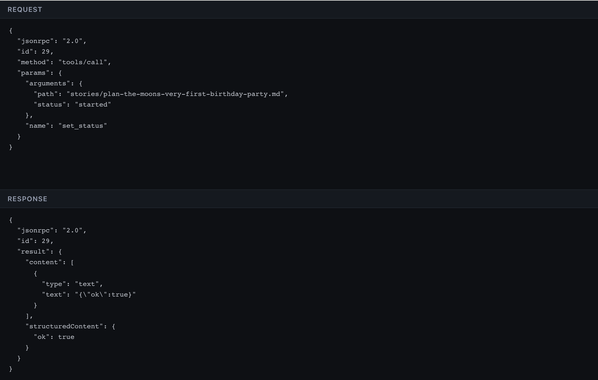

Working with an AI agent
11. Working with an AI agent
Every chapter showed an MCP frame in the right column. This one zooms in: how the JSON-RPC protocol works, what tools an agent can call, and why agilemarkdown treats the agent as a first-class collaborator instead of an afterthought.
11.1 What MCP is
MCP, Model Context Protocol, is a JSON-RPC dialect for tools.
A client (an AI assistant, an IDE, a custom agent) connects to a
server (agilemarkdown's am mcp process), discovers what
operations are available via tools/list, and invokes them with
tools/call. The board you have been clicking around in is doing
the same thing an agent would do, just through HTTP adapters over
the same underlying functions.

The CLI version. Pipe JSON-RPC into am mcp over stdio; read
JSON-RPC out. Real agents speak this protocol directly.
$ echo '{"jsonrpc":"2.0","id":1,"method":"tools/list"}' | am mcp
... 52 tools
The lab's MCP Console (this tab) is the same protocol, exposed through a tool dropdown + args form for readability. Picking a tool, filling args, clicking Send sends exactly the frame the CLI does.
11.2 The full flow: initialize → call → response
A real MCP session starts with a handshake. The lab does this
once on startup and reuses one am mcp child for every request.

$ cat <<JSON | am mcp
{"jsonrpc":"2.0","id":1,"method":"initialize",
"params":{"protocolVersion":"2024-11-05",
"capabilities":{},
"clientInfo":{"name":"demo","version":"0.1"}}}
{"jsonrpc":"2.0","method":"notifications/initialized"}
{"jsonrpc":"2.0","id":2,"method":"tools/call",
"params":{"name":"priority_list",
"arguments":{"backlog":"stories"}}}
JSON
Three frames: initialize, the initialized notification, then the actual tool call. The response is one JSON object per id.
Same three frames, sent transparently by the lab when you click Send. The wire-view tab shows the exact request and response, copyable, paste into your agent's connection layer.
Full envelope
{
"jsonrpc": "2.0",
"id": 2,
"method": "tools/call",
"params": {
"name": "priority_list",
"arguments": { "backlog": "stories" }
}
}
Response:
{
"jsonrpc": "2.0",
"id": 2,
"result": {
"structuredContent": {
"backlog": "stories",
"items": [/* 18 rows */],
"count": 18,
"velocity": 7
},
"content": [{ "type": "text", "text": "..." }]
}
}
11.3 What an agent typically does
The agent's view of "what should I do next" is a series of read tools, then one write.
A typical sequence:
priority_list, see the current sprintepic_progress, see roll-upsiteration_fit, see if today's plan fits velocityset_status path:... status:started, pick one up- work happens
add_comment, leave a note about decisionsset_status path:... status:finished, done from the dev side
Acceptance is the PM's; the agent never sends it.
11.4 The three-surface symmetry
All three surfaces drive the same git repo, with no central server above them, and agilemarkdown is the state machine that keeps the plain files on disk coherent across them.